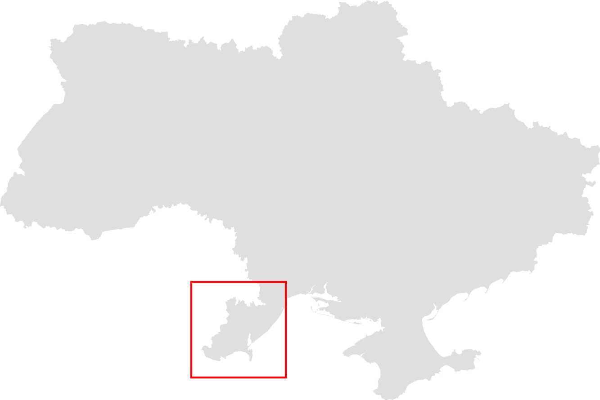

Повідомити про конфлікт
Фільтр по типам конфлікту
Ступінь серйозності
гострий
помірно гострий
негострий
Карта конфліктності. Південь Одещини

Протягом трьох місяців ми проводили пілотний моніторінг конфліктів в регіоні і нанесли їх на карту.
Моніторинг охопив Ізмаїльський, Ренійський, Кілійський, Болградський і Татарбунарський райони Одеської області. Клікніть на район, щоб подивитись детальну інформацію по зафіксованим конфліктам.
Карта буде наповнюватись. Щоб повідомити про конфлікт, тисніть на відповідний лінк внизу карти і заповніть онлайн-форму.